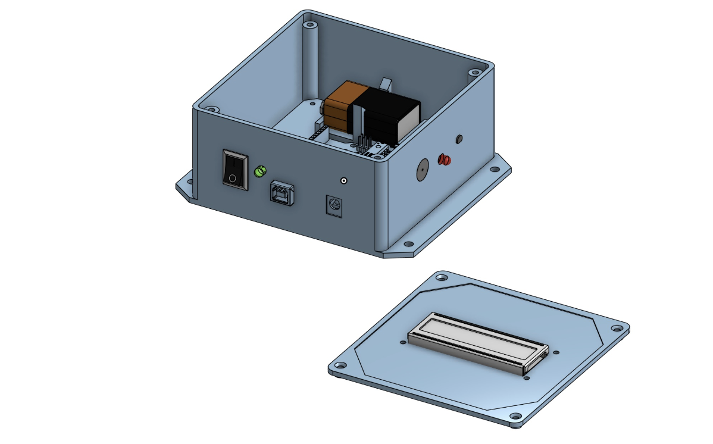
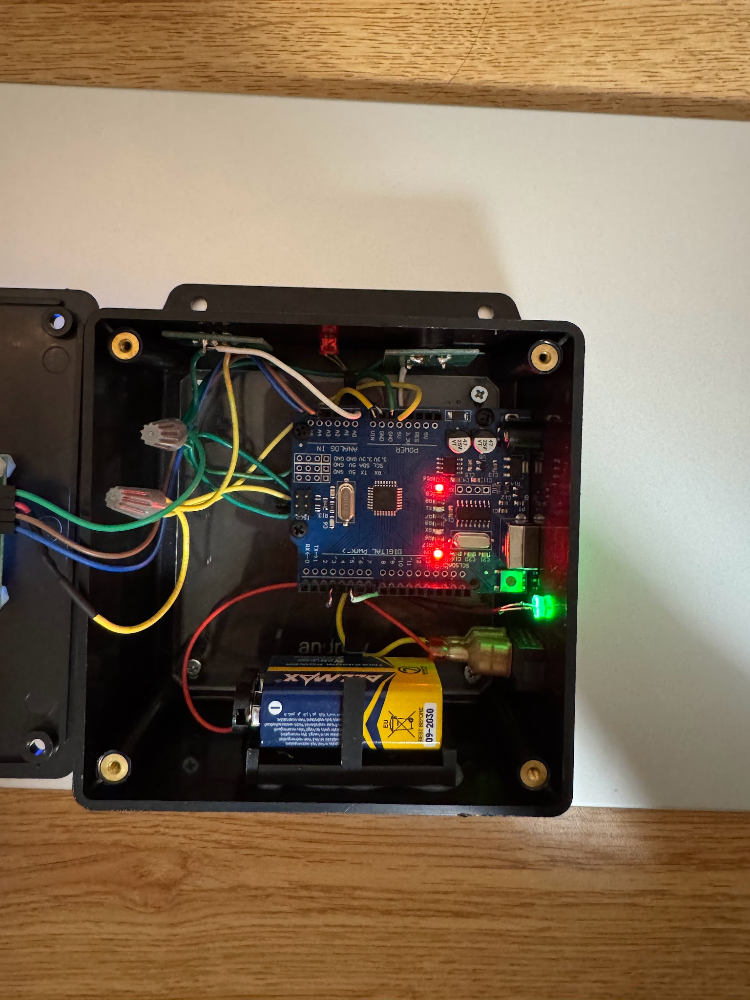

Room Temperature Monitor
I designed and built a room temperature monitor for EK131, taking the project from component measurements and CAD modeling through circuit assembly, soldering, and Arduino programming. The finished prototype displays temperature in Fahrenheit and Celsius and alerts the user when the room falls outside a programmed comfort range of 67–72°F.
Skills: CAD, mechanical drawings, circuit design, soldering, Arduino programming, and prototype assembly.
Enclosure Design
I measured the individual components before modeling the enclosure and lid in CAD. The layout had to accommodate the Arduino Uno, 9V battery, sensor, buzzer, LEDs, switch, LCD, and connecting wires while keeping the display and controls accessible. A laser-cut Arduino mounting plate and a 3D-printed battery holder helped secure the internal components.

Electronics and Assembly
The Arduino reads a TMP36 temperature sensor and drives a 16×2 I2C LCD, green and red LEDs, and a buzzer. I soldered the TMP36 and buzzer to their respective circuit boards and used 22 AWG solid-core wire for the soldered connections. Jumper wires connected the LCD, while grouped 5V and ground connections simplified the wiring inside the enclosure.
I used Ohm’s law and Kirchhoff’s voltage law to select the LED resistors: 1 kΩ for the green LED and 220 Ω for the red LED. The prototype runs from a switched 9V battery, with the Arduino supplying 5V to the connected components.

Programming and Operation
The program converts the TMP36 analog reading to a voltage, calculates temperature in Celsius, and converts it to Fahrenheit. The LCD displays both units along with the current status.
- 67–72°F: the green LED stays on, the buzzer stays off, and the LCD reads “Status: Normal.”
- Below 67°F or above 72°F: the green LED turns off, the red LED flashes, the buzzer beeps, and the LCD reads “Outside of range.”

Results and Future Improvements
The functioning prototype met the project goal: measuring room temperature, displaying a clear status, and providing visual and audible alerts outside the selected range. All components fit within the enclosure and were secured for assembly.
The main improvement would be a more suitable long-term power source, such as an AC/DC adapter in place of the prototype’s 9V battery. A smaller enclosure and Arduino Nano could also reduce the overall size, although the tighter layout would make wiring more challenging.